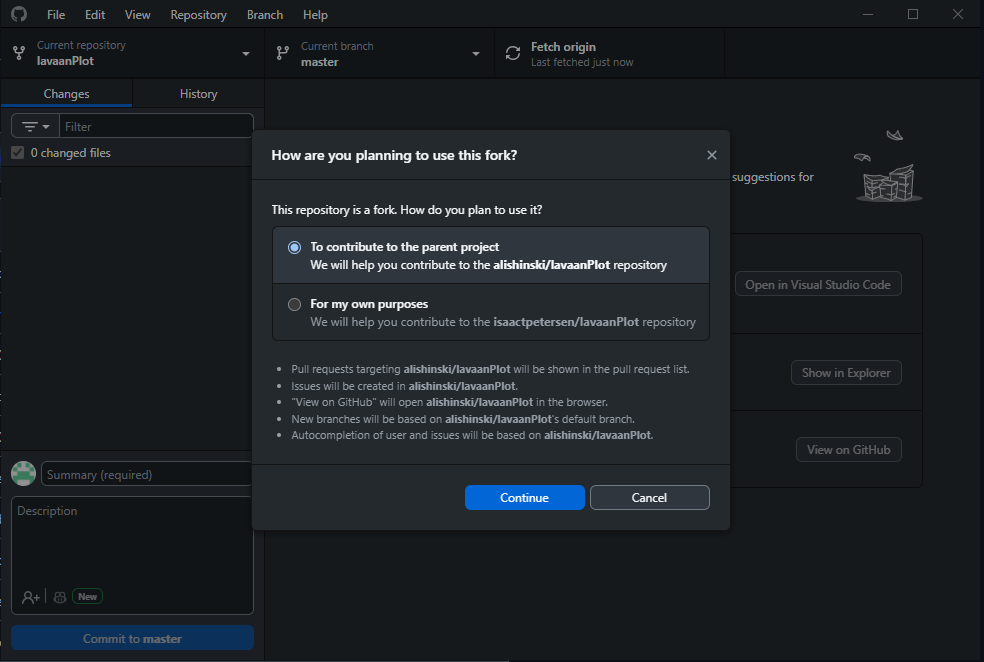

Git, GitLab, and GitHub
For code below, Open Git (or Powershell, Terminal, Command Prompt, etc.) in directory of repository and use the relevant code.
1 When to Use GitHub vs GitLab
We use repositories for version control of code and data files (see the next section for more information on why). For data security, we use the university’s Enteprise instance of GitLab (https://research-git.uiowa.edu) for repositories that include data files. For repositories that we want to generate a public website from (and that do NOT include study data), we use GitHub (https://github.com).
For repositories to save in GitLab, save the repository in the relevant subproject folder of the PetersenLab Group: https://research-git.uiowa.edu/PetersenLab. For repositories to save in GitHub, save the repository in the DevPsyLab Organization group: https://github.com/DevPsyLab.
However, regardless of whether you will store the repository in GitHub or GitLab, you will still use git for version control via GitHub Desktop. For information on how to set up and use git and GitHub Desktop, see Section @ref(howToUseGit).
2 Why It is Important to Use Git/Version Control
There are many reasons why it is important to use git/version control:
- It (
GitHub/GitLab) provides backups of all files in the cloud - It (
GitHub/GitLab) allows you to access the files in the cloud from any computer with access to the internet, even if you are away from your local computer - Version control provides history of all (committed) changes made to all files
- If you make a mistake in your code, you can easily revert to a prior version because you took snapshots (commits) of your files!
- You don’t need to keep all the “commented out” lines of code
- This allows you to write cleaner code, because you can remove commented out lines of code, knowing that you can easily recover them in your commit history
- You don’t have to keep files or folders named “project_old” or whatever
- This allows you to keep cleaner file/folder directories for your projects
- You don’t need to keep all the “commented out” lines of code
Gitkeeps all files for the project self-contained, which helps increase reproducibility- It (
GitHub/GitLab) allows easier collaboration with others on the project - It (
GitHub/GitLab) allows easier sharing with outside researchers
3 How to Use
3.1 To begin
- Install
git(https://git-scm.com/downloads) - Install
GitHub Desktopapp (https://desktop.github.com) - Create a Personal Access Token (https://docs.gitlab.com/ee/user/profile/personal_access_tokens.html, archived at https://perma.cc/6ZH8-JNZC; or https://research-git.uiowa.edu/-/profile/personal_access_tokens, archived at https://perma.cc/7JPU-WDBS) on the UI
GitLabinstance (https://research-git.uiowa.edu) to access UIGitLabrepositories fromGitHub Desktop.- For application name, put “GitHub”
- For expiration date, leave it blank (or set it for as late an expiration date as possible)
- For scopes, select everything
- When cloning a repository from UI’s
GitLabinstance usingGitHub Desktop,GitHub Desktopwill ask for your username and password. Enter your HawkID as your username (or your GitHub.com username if different) and your UIGitLabPersonal Access Token as your password.
3.2 Best practices working with version control
- Create a new repository (repo) whenever you start a new project
- Follow the Petersen Lab template for how to structure your repo (folder structure,
.gitignorefile, etc.): - To collaborate with others:
- Navigate to the repo on the UI
GitLabwebsite - When in the repo, click “Members”
- Add the Collaborator
- Navigate to the repo on the UI
- Each time you want to work on the files in the repo, follow this cycle:
- Using the
GitHub Desktopapp, sync the repo files from the cloud to the repo on your local computer (i.e., fetch any repo updates to your local machine from the cloud)- Make sure to do this before many code changes so you are working with the latest version of files
- Do your work on the repo: make any code/file/folder additions, changes, or deletions
- Using the
GitHub Desktopapp, commit the changes- Commit changes to the cloud early and often; when deciding what to commit and when, try to group “similar changes” into the same commit (“like goes with like”)
- Use a separate “commit” for each separable “functional unit” changed
- Using the
GitHub Desktopapp, sync the repo files from your local computer to the repo on the cloud (i.e., push all of your committed changes to the cloud)- Never leave file changes uncommitted or unsynced when you stop working on the repo for the day!
- Using the
3.3 Instructions for using GitHub Desktop app with GitLab
- https://itnext.io/how-to-use-github-desktop-with-gitlab-cd4d2de3d104 (archived at https://perma.cc/S59R-3YT7)
- https://community.reclaimhosting.com/t/using-github-desktop-with-gitlab/876 (archived at https://perma.cc/ZPT9-KEQL)
- https://stackoverflow.com/questions/22639815/does-github-for-windows-work-with-gitlab (archived at https://perma.cc/99RR-6KLE)
- https://github.com/desktop/desktop/issues/852#issuecomment-402546848 (archived at https://perma.cc/3GCU-GTPU)
- https://github.com/desktop/desktop/issues/3816#issuecomment-421060974 (archived at https://perma.cc/N8RS-BFWR)
3.4 How to create a repo on local computer
- Create repository on UI
GitLabwebsite (https://research-git.uiowa.edu) - Open
GitHub Desktopapp - Clone repository
- Add
.gitignorefile (from Template project: https://research-git.uiowa.edu/petersenlab/Template/blob/master/.gitignore) to the root of the cloned project folder - Follow the Petersen Lab template for how to structure your repo (folder structure,
.gitignorefile, etc.): https://research-git.uiowa.edu/PetersenLab/Template- Note that a folder will not be synced if there are no files in them (i.e., if the folder is empty)
- Sync file changes using
GitHub Desktop(“Fetch origin”, “Push origin”)
3.5 How to add a pre-existing repo from the lab drive (LSS/RDSS/network share) to your computer
For example, the SRS-DataProcessing repo lives on the lab drive.
- Make sure Dr. Petersen has given you collaborator access to the repo
- Open
GitHub Desktopapp - Navigate to the folder location of the repo on the lab drive
- Drag the
.gitfolder within the repo to theGitHub Desktopapp
3.6 How to clone a repo from GitLab to local
- Navigate to relevant repo on
GitLab(https://research-git.uiowa.edu) - Click
Clonein right-hand corner, selectClone with HTTPS - Open
GitHub DesktopApp and clickFile,Clone Repository - Click the
URLtab - Paste in the URL
- Navigate to where you want to save it
- The recommended location for your repos is to create a folder titled
GitHubin yourDocumentsfolder, and to put repos in theGitHubfolder (by default: PC:C:/Users/[USERNAME]/Documents/GitHub/; Mac:/Users/[user]/Documents/GitHub/) because various lab scripts try to read the lab functions from this location; it is NOT recommended to putgitrepos in a OneDrive folder because [gitfiles tend not to play nice with syncing services](https://stackoverflow.com/questions/19305033/why-is-putting-git-repositories-inside-of-a-dropbox-folder-not-recommended; archived at https://perma.cc/UTX8-KVL9) (e.g., OneDrive, Dropbox)
- The recommended location for your repos is to create a folder titled
- Click
Clone - Enter your
GitLabusername as your username and your Personal Access Token as your password
3.7 How to add, modify, or delete files in a repo
- Open relevant repo in
GitHub Desktopapp - Pull any repo updates from the server to the local files (“Fetch origin”, “Pull origin”)
- Make necessary additions, modifications, and deletions to the files
- Create commits for all changes in
GitHub Desktopapp (one commit per substantive change): Enter “Summary” and “Commit to master” - After making all changes and commits, push local file changes to the server using
GitHub Desktop(“Fetch origin”, “Push origin”)
3.8 How to collaborate with others
- Navigate to the repo on the UI
GitLabwebsite - When in the repo, click “Settings”
- Click “Members”
- Add the Collaborator
3.9 How to create a pull request
To make/propose changes to a repo that you do not have write permissions for, you need to create a pull request.
- To create a pull request to a repo that you do not have write permissions for, first create a fork of the repo. To fork the repo, see here: https://docs.github.com/en/pull-requests/collaborating-with-pull-requests/working-with-forks/fork-a-repo#forking-a-repository (archived at https://perma.cc/33P6-Y4BR)
- After forking the repo, sync the repo with the latest version from the cloud so you know you are editing the latest version of the files. When asked by GitHub Desktop how you plan to use the fork, select “To contribute to the parent project”, as in the image below. 
- Make any changes to the files in the repo that you’d like to incorporate into the repo.
- Open a pull request with your changes: https://docs.github.com/en/pull-requests/collaborating-with-pull-requests/proposing-changes-to-your-work-with-pull-requests/creating-a-pull-request-from-a-fork (archived at https://perma.cc/KAP3-L5L7)
- The owner of the repo will review your changes and decide whether to accept them or whether additional changes are needed.
You can also create a pull request if you have write permissions to the repo. This can be useful when collaborating on code with multiple people. To do this, first, create a new branch. Then, make your changes in the new branch. After making your changes, create a pull request to merge the changes in the new branch into the main branch.
Note: If your pull request is showing up in your local repo but not in the original repo (for the repo owner), you might need to delete your forked repo and re-fork the original repo.
3.10 How to clone a repo into local directory with a different folder name (directory must be empty)
GitBash into directory
git clone https://research-git.uiowa.edu/petersenlab/srs/SRS-DataProcessing.git .
git remote set-url --add origin https://research-git.uiowa.edu/petersenlab/srs/SRS-DataProcessing.git
git remote -v3.11 How to transfer a repo to a new location/group/subgroup
- Create location/group/subgroup (e.g.,
PetersenLab/School Readiness Study) - When in the repo, click “Settings”
- Go to “Advanced”, and click “Expand”
- Go to “Transfer project”, and select the location/group/subgroup you want to transfer the repo to under “Select a new namespace”
- In the local repo, edit the repo URL in the
.git/configfile - When asked for your password, enter your username (HawkID) and
GitLabPersonal Access Token
3.12 How to use large file storage (LFS)
In GitLab, we use large file storage (LFS) to store large files. In GitHub, we do not use LSS to store large files, because the University does not have an Enterprise agreement with GitHub (thus, we would have to pay to use it). As a consequence, individual files hosted in a GitHub repo must be less than 50 MB in size. By contrast, individual files hosted in a GitLab repo may be larger than 50 MB.
To set up LFS in for a GitLab repo, follow these steps:
- Make sure the large files are not in the repo yet.
- In
GitHub Desktop, open the repo you want to use LFS for - In
GitHub Desktop, select theRepositorytab, then selectCommand Promptor similar - In the command prompt, type (based on instructions from: https://docs.gitlab.com/ee/topics/git/lfs/; archived at https://perma.cc/6WMC-GTKN):
git lfs install # initialize the Git LFS project
git lfs track "*.Rdata" # select the file extensions that you want to treat as large files- This should have created a
.gitattributesfile in the repo. InGitHub Desktop, commit and push the.gitattributesfile to the cloud version of the repo. - Copy the large files into the repo.
- In
GitHub Desktop, commit and push the large file to the cloud version of the repo. - (Or, if not using
GitHub Desktop, can commit in the command prompt (https://docs.gitlab.com/ee/topics/git/lfs/)):
git add . # add the large file to the project
git commit -am "insert name of commit message here" # commit the file meta data
git push origin master # sync the git repo and large file to the GitLab server- When asked for credentials, use your HawkID as your username and your personal access token as your password
3.14 How to revert changes to a previous commit
- Open the
Github Desktopand navigate to the repository you would like to revert changes for - Next, click the
historytab - Right click the commit you would like to revert back to, and select revert changes
- Push the changes to the repo to complete the revision

3.15 How to perform a partial commit
- In
GitHub Desktop, click the desired lines in the gutter - Create the commit, and leave the other changes for you to continue working on.
https://github.blog/2015-01-14-partial-commits-in-github-for-windows (archived at https://perma.cc/5U3V-YWRF)
3.16 How to copy a repo to a new repo
3.17 How to make a repository a template repository
https://docs.github.com/en/repositories/creating-and-managing-repositories/creating-a-template-repository (archived at https://perma.cc/PYW5-KAP5)
3.18 How to create a respository from a template
https://docs.github.com/en/repositories/creating-and-managing-repositories/creating-a-repository-from-a-template (archived at https://perma.cc/9E2C-MUCK)
4 Troubleshooting
4.1 Error: Authentication Failed

This error can occur for a variety of reasons. One possibility is that your GitLab Personal Access Token (PAT) has expired. To fix this:
- Create a Personal Access Token (https://docs.gitlab.com/ee/user/profile/personal_access_tokens.html, archived at https://perma.cc/6ZH8-JNZC; or https://research-git.uiowa.edu/-/profile/personal_access_tokens, archived at https://perma.cc/7JPU-WDBS) on the UI
GitLabinstance (https://research-git.uiowa.edu) to access UIGitLabrepositories fromGitHub Desktop.- For application name, put “GitHub”
- For expiration date, leave it blank (or set it for as late an expiration date as possible)
- For scopes, select everything
- When cloning a repository from UI’s
GitLabinstance usingGitHub Desktop,GitHub Desktopwill ask for your username and password. Enter your HawkID as your username and your UIGitLabPersonal Access Token as your password.
If you do not receive a prompt to enter your username and password, try removing the saved GitHubcredentials from Windows Credential Manager: https://github.com/desktop/desktop/issues/8860#issuecomment-2211812646
4.2 GitHub trying to connect to git config in another user’s User folder
To resolve, ensure that the HOME environment variable is set to your user folder (assuming that it is not a shared computer)
To do so: - Type “Environment Variables” into the search bar of your Windows task bar - Click “Open” under the result of “Edit the system environment variables” - Enter an admin user/password when prompted - Click “Environment Variables” at the bottom right corner of the popup window that should open after entering admin credentials - Find the HOME environment variable and click it to select (highlighted blue) - Click “Edit” and update the path to match your Users folder
4.3 GitHub shows all files as being changed even though the files haven’t changed
Windows and Mac use different line endings (https://github.com/Microsoft/WSL/issues/184; archived at https://perma.cc/F8UX-YJP3):
git config --global core.autocrlf true4.4 Error: You are not allowed to push code to protected branches on this project
- Make sure the owner of the repo unprotects the branch (https://stackoverflow.com/questions/32246503/fix-gitlab-error-you-are-not-allowed-to-push-code-to-protected-branches-on-thi; archived at https://perma.cc/98AF-N6BY)
- Open the repo, click “Settings”, “Repository”, “Protected Branches”
- Change “Allowed to merge” and “Allowed to push” to “Developers and Maintainers”, and click “Unprotect”
4.5 Error creating commit
git add -A
git status
git commit -m "Message"` (where "Message" is the summary message of the commit)
git push
git status4.6 Undo commit (but retain file changes)
git reset --soft HEAD^4.7 Error: Sync failed
git status
git push4.8 Error: Sync failed -- Syncing would overwrite your uncommitted changes
https://stackoverflow.com/questions/23084822/github-some-uncommited-changes-would-be-over-written-by-syncing (archived at https://perma.cc/AP5S-G38B):
git stash -u- (perform manual sync in
GitHub Desktop) git stash pop
4.9 Error: Pipeline has failed for master
https://docs.gitlab.com/ee/topics/autodevops/#at-the-project-level (archived at https://perma.cc/3MAQ-ZBFF)
- Open the repo in
GitLab - Go to your project’s “Settings” > “CI/CD” > “Auto DevOps”
- Disable (uncheck) the “Default to Auto DevOps pipeline”
- Click “Save changes”
5 OLD
5.1 Creating Repo on Local Directory (if Directory is empty)
- Create Repo on GitHub
- Don’t add README yet
- Open
GitShell, navigate to directory, and type:
git init
git remote add origin https://github.com/DevPsyLab/petersenlab.git
git remote -v- Drag and drop the folder with the repository into the GUI app
- Add .gitignore file with .Rhistory
5.2 Creating Repo on Local Directory (if Directory is not empty)
- Create Repo on GitHub
- Don’t add README yet
- Open
GitShell, navigate to directory, and type:
git init
git add .
git commit -m 'First commit'
git remote add origin https://research-git.uiowa.edu/itpetersen/PetersenLab.git
git remote -v
git push -u origin master- Drag and drop the folder with the repository into the GUI app
- Add .gitignore file with .Rhistory
5.3 Creating R Scripts Repo on Lab Server
- Create
RScripts Repo - Open
RScripts folder and delete.gitfolder - Open
GitShell and type:
git init
git add .
git commit -m 'First commit'
git remote add origin https://research-git.uiowa.edu/PetersenLab/R-Scripts.git
git remote -v
git push -u origin master- Move
RScripts folder to another location - Clone repo into folder:
- open
GitShell - navigate to
Z:\TDS II\Data\R Scripts\
The dot on the end of thegit clone https://research-git.uiowa.edu/PetersenLab/R-Scripts.git .git clonecommand means “the current directory” - open
- Drag and drop the folder with the repository into the GUI app
- Add
.gitignorefile with.Rhistory